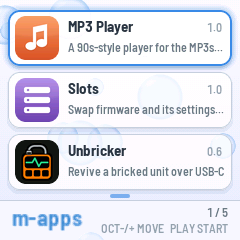
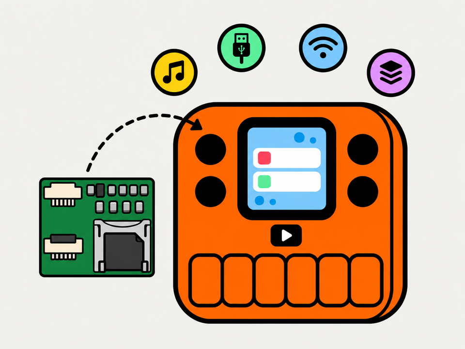
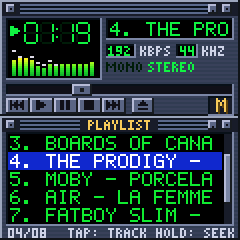
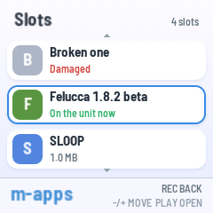
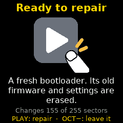
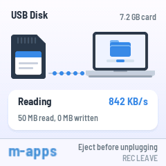
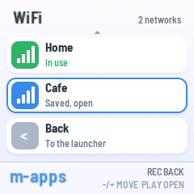
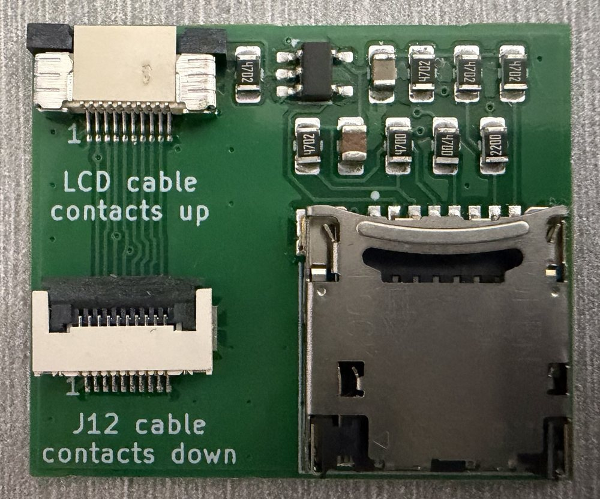
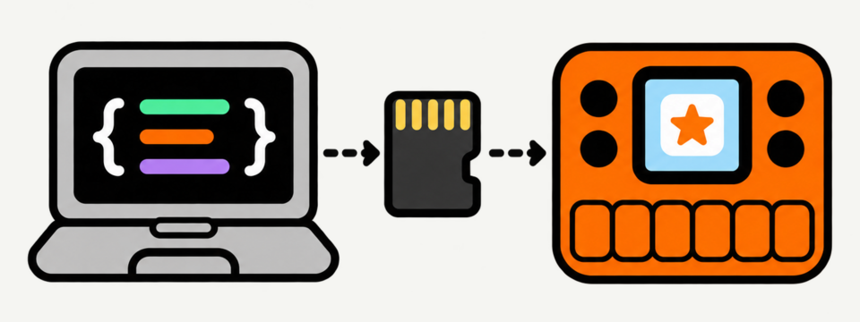

Launcher
Your apps as tiles, each with its icon, a line about it and its version. OCT−/+ (or < >) to move, PLAY to start.
For the M-VAVE FM-1 and SMK-37
m-card is a small board that adds a microSD slot, with no soldering to the unit. m-apps are programs you start from that card. They run from memory, so the firmware you've installed stays exactly as it is.
Order the board ready-made or solder it yourself. The apps come as one zip for both units: a launcher and five apps to start with. Free and open source.

m-card sits inside the unit, between the screen's cable and the main board, and shares the screen's connection. It plugs in: nothing is soldered to the unit.
With m-bootloader on the unit, its menu gets an SD card item. Hold PLAY (SEQ PLAY on the SMK-37) while switching on to open the menu.
SD card starts the m-apps launcher from the card. Pick an app and it runs. Most of them go back to the launcher when you're done.
Your firmware stays put. Apps load into RAM and run from there. Switch the unit off and on and it starts its own firmware, as always. The only apps that write flash are the ones whose job it is: Slots, when you load a slot, and Unbricker, which writes the broken unit, not this one.
Every screen here is drawn by the app's own code.

Your apps as tiles, each with its icon, a line about it and its version. OCT−/+ (or < >) to move, PLAY to start.

A 90s-style player for the MP3 files in the card's root, with a playlist and an analyser.

Keeps whole firmware images, and their settings, on the card, and swaps between them with no computer. Name them on the keys.

Repairs a broken FM-1 or SMK-37 with this unit and a USB-C cable: it writes a fresh m-bootloader to the other one. Also in your browser.

Shows the card to your computer as a USB drive, so you can copy files without opening the unit.

Keeps the networks in WIFI.TXT and tests them, for the apps that go online. Add networks by
typing on the keys.
The card isn't only for apps. Firmware is starting to use it too, while it runs: to load samples and to save your work.
An open firmware for the FM-1. From version 0.3, its Builder has an SD card mode: turn it on, build and install. Projects, presets, kits and samples then live on the card, and samples play straight from it.
A base for building your own firmware. Put sd = true in your firmware's fm1.toml,
and it can read and write files on the card. msc = true adds a USB drive mode.
fm1-base on GitHub and its SD card notes
m-apps-sd-card.zip and unzip it.MBOOT folder and WIFI.TXT to the card's root.WIFI.TXT and put in your network's name and password. Or add it later in
the WiFi app.A 30 × 25.2 mm, two-layer board. Order it with the parts already on, or bare to solder yourself. It's public domain: order it, change it, sell it.

m-card-gerbers.zip (don't unzip it),
and the parts list m-card-bom.csv and placement file
m-card-cpl.csv.| PCBA Type | Economic, not Standard. |
|---|---|
| Assembly side | Assemble top side. It's already chosen: all the parts are on the top. |
| PCBA Qty | It starts at the number of boards (5 is the least you can order), but you can have just 2 of them assembled. |
m-card-gerbers.zip. Don't unzip it.All of them are at LCSC: search for the part numbers. A few spare resistors and capacitors are handy.
| Qty | Part | LCSC |
|---|---|---|
| 1 | Hirose DM3CS-SF hinged microSD socket (J1) | C202111 |
| 1 | 10-pin 0.5 mm FPC socket, bottom contact (J2) | C2856798 |
| 1 | 10-pin 0.5 mm FPC socket, top contact (J3) | C3446068 |
| 1 | 74LVC1G04 inverter, SOT-23-5 (U1) | C7827 |
| 5 | 47 kΩ, 0805 | C17713 |
| 2 | 470 Ω, 0805 | C17710 |
| 1 | 150 Ω, 0805 | C17471 |
| 1 | 10 µF, 0805 | C15850 |
| 1 | 100 nF, 0805 | C49678 |
Also a 10-pin, 0.5 mm FFC cable 8–10 cm long, contacts on the same side at both ends ("type A"): from AliExpress (choose Length 10CM 10PCS: its other options are already right), or from Mouser (GCT 05-10-A-0101-A-4-06-4-T-HF). And thin double-sided tape, and a microSD card.
Print the assembly guide: every part's place, value and direction at 5:1, and an order to solder them in. Every part is hand-solderable with a fine tip. The two cable sockets are the fiddly part: plenty of flux, tack one tab, drag-solder the row.
Before you fit it, check with a multimeter that 3.3 V (J2 line 7) isn't shorted to ground (line 1).
The silkscreen by each socket repeats which way the contacts face. Opening the unit is at your own risk.
Everything about the board, how it works and how to change it is in the m-card repository.
m-apps is also a kit. Write an app in Rust, build it with make, and give it a folder in
/MBOOT/APPS: the launcher finds it. The same file runs from the card, over MIDI, or from a
computer with M-Flasher's run-ram.
The kit has the screen, the keys, sound, the card and its FAT32, USB and WiFi. One build can run on both units.
#![no_std]
use kit::board::{board_init, board_keys, board_restore};
use kit::{app, display::line, platform::hal_delay_us};
kit::app!(main);
fn main(_lsb_mhz: u32) -> i32 {
let board = app::board(); // 1: FM-1, 2: SMK-37
if board == 0 { return 1; }
board_init(board == 2);
if kit::display::init(board) {
line(1, 0x07e0, b"HELLO FROM THE CARD");
line(3, 0xffff, b"ANY KEY: BACK");
}
while board_keys() != 0 { hal_delay_us(1000); } // let go of PLAY
while board_keys() == 0 {
app::feed(); // the watchdog
hal_delay_us(1000);
}
board_restore();
0 // back to the launcher
}Start with the README Writing apps with an AI agent? AGENTS.md has the loop, the rules and the traps found so far.

m-card and m-apps are free, like M-Flasher, m-bootloader and M-Unbricker. If they're useful to you, a donation helps keep them going.